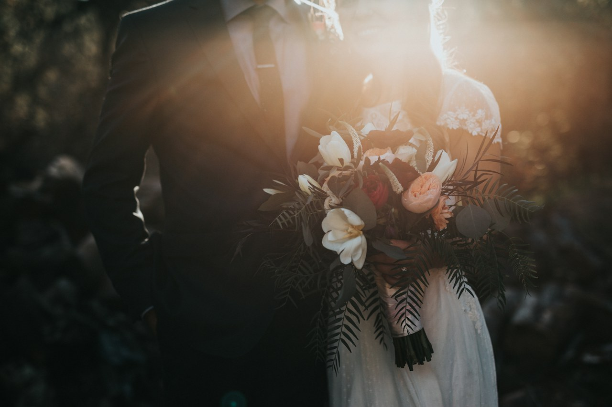

Partire dall’occasione.
Matrimonio, cerimonie o un traguardo da festeggiare: i filtri aiutano a trovare il proprio punto di partenza.
Esplora le ispirazioni ↗PROPOSTA DIMOSTRATIVA / BORGO DI LUNÈRA
Un sito per far scoprire il mondo Velàvia e accompagnare chi organizza un evento dalla prima ispirazione a una conversazione con la boutique.
Proposta di design e funzionalità. Immagini illustrative, nessun invio di richieste reali.

Toni avorio e bordeaux. Un’identità sobria, pensata per le occasioni speciali.
IL PERCORSO DEL VISITATORE
Matrimonio, cerimonie o un traguardo da festeggiare: i filtri aiutano a trovare il proprio punto di partenza.
Esplora le ispirazioni ↗Fotografie, tipografia e un fiocco tridimensionale raccontano il tema del ricordo e del dono. Le animazioni si possono mettere in pausa.
Guarda i dettagli ↗Data, quantità, budget e preferenze diventano un riepilogo da copiare, scaricare o stampare. La demo non lo invia al negozio.
Compila un esempio ↗DALLA DEMO AL SITO DEFINITIVO
Questi punti richiedono le informazioni e le scelte della boutique. Il sito dimostrativo non presenta un catalogo commerciale verificato.